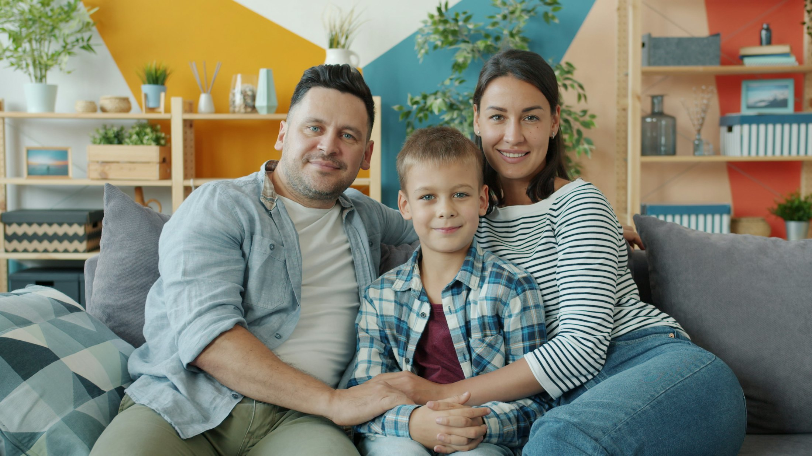

Agendar
por chat
WhatsApp y Telegram · las 24 horas
El paciente escribe como le escribe a su familia. El asistente le pide la especialidad y su EPS, le ofrece los horarios libres y la cita queda en el sistema del hospital en cuanto responde SÍ. Si no hay cupo, lo guarda en la lista de espera.
Ver cómo se agenda